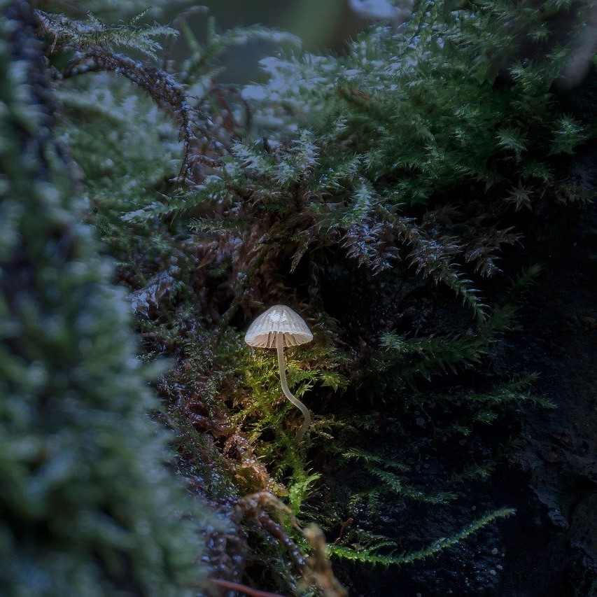

Fungi in biotechnology
Written by Oscar Wong ..... 28 November 2024
In the future of mankind’s journey into space and the exploration of the cosmos, there is a need to develop more and more advanced technology in order to enable and encourage this. As part of the science that will advance space travel, fungi have a massive potential for being a part of this - space biotechnology.
In the past, fungi have been used by humans for thousands of years, from yeast in bread, to wine, to penicillin and more. This highlights how incredibly useful fungi can be in producing many different biological molecules, and has led to extremely used biotechnology on earth, in processes such as for enzymes, pharmaceuticals and alcohols. Not only this, but fungi play major roles in the environment, and, therefore, have purposes including breaking down organic matter and recycling them into new molecules. Altogether, these make fungi attractive organisms to be able to use in space.
Beyond fungi’s usefulness, there are several species of fungi which are able to withstand extreme environments. This is essential when transporting a fungi into space as it would then not require as much protection. In space, there is microgravity - low gravity making astronauts and every object ‘float’ around. Whilst this seems harmless, naturally, all life on earth has adapted to living with gravity; going into space is like removing an essential downwards pressure which we have all been evolved to grow with. As a result, many organisms end up with problems when living in space - including humans. Some fungi, despite this, can still survive and stay viable in microgravity. Other risks such as exposure to radiation (due to the lack of the magnetic field that surrounds earth, which protects from this), extreme cold temperatures and more are also present in space. Fungi has remarkable abilities to adapt resistance to it all.
As a case study, take Aspergillus niger, a filamentous fungi being used widely in research, both for on earth purposes and for the prospects of being used in space biotechnology. On earth, it was first used to produce citric acid, a major chemical used in the food industry. It can also produce a wide range of molecules, including enzymes and pharmaceutical products. Eventhough the fungi has its many uses, it is commonly found, such as in soil, on the surfaces of dried fruits and nuts and more. As a result, it has been found on the ISS in surveys, and has been used in further research. It has been found that its spores can survive fairly well in high vacuum and low temperature environments, survive radiation, survive months of microgravity and even adhere well onto materials such as iron and polycarbonate. These all amount to it having a great chance of being used in space biotechnology - though several other fungi species also have comparable characteristics.
As mentioned several times, fungi can produce compounds that are of use to humans, possibly becoming a biological production machine, without need for complex chemical setups. It has the ability to be transported as spores and then grow. Another potential function for fungi in space biotechnology is in terraforming. Fungi could be used to bind together planet soils, needed to begin colonising another planet. It could also be used for extracting minerals and metals from the ground, including removing toxic metals and also biomining, gathering metals of use. This would take advantage of metals already on another planet, making it more useful for planet colonisation (though also in mining for profit). As mentioned earlier, fungi play an important role in the recycling of organic matter in the ecosystem and so this could lead to contributing to life support systems in space, where waste needs to be recycled as part of waste management. Finally, the research of fungi’s extraordinary characteristics such as in resistance to radiation, such as how its DNA repairs itself, can help find solutions to reduce the problems that humans, as biological organisms, face when travelling into space.
Overall, fungi play an important role in exciting research - research that is taking place right now, being supported by institutions such as ESA and NASA. The future of space technology is full of potential at the moment, including the potential for fungi biotechnology to be harnessed and used for many purposes in journeys to space and other planets. In our CanSat project, we hope to simulate further a part of this innovative research in growing fungi on the CanSat to see how it would grow on another planet’s atmosphere, with its conditions such as gases and temperature. I hope you follow along with our project and see how it turns out!